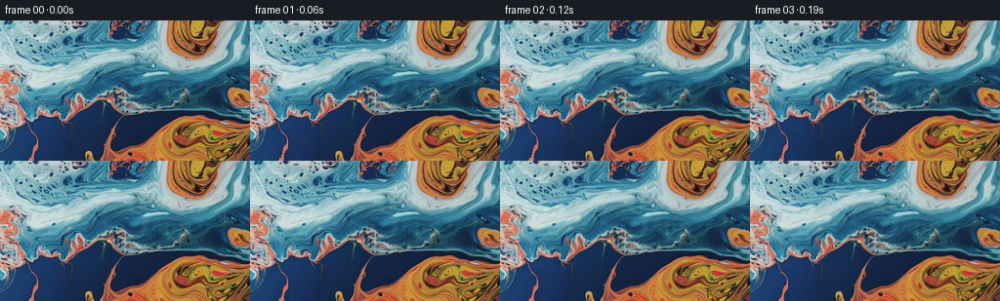

候选 01 · 2026-11-08T19:23:01.283270+00:00 · 点开播放与检查图
inspection.png

transition_check.png

代码变化
--- 上一保存版本
+++ 本次保存版本
@@ -0,0 +1,101 @@
+"""Animate a macro photograph of marbled liquid by continuous fluid advection.
+The stationary stream field is a sum of broad eddies and smaller interfacial
+eddies. Inverse characteristics are integrated rather than repeatedly resampling
+RGB, so tiny cells and paint filaments remain crisp throughout the shot.
+"""
+from pathlib import Path
+import numpy as np
+from PIL import Image
+import artifact_io
+
+ROOT = Path(__file__).resolve().parent
+
+
+def velocity(x, y):
+ # Tangential Gaussian eddies: smooth and divergence-free away from the
+ # out-of-frame boundary taper. Directions follow the photograph's curls.
+ u = np.full_like(x, 0.45)
+ v = np.full_like(y, -0.15)
+ eddies = [
+ (202., 14., 45., 0.175),
+ (219., 132., 62., -0.145),
+ (133., 58., 71., -0.070),
+ (121., 7., 33., -0.115),
+ (7., 65., 30., 0.095),
+ (77., 83., 25., 0.105),
+ (165., 79., 31., 0.092),
+ (43., 25., 35., 0.052),
+ (102., 133., 45., -0.041),
+ ]
+ for cx, cy, radius, spin in eddies:
+ dx = x - cx
+ dy = y - cy
+ strength = spin * np.exp(-(dx*dx + dy*dy) / (radius*radius))
+ u -= dy * strength
+ v += dx * strength
+ # Large-scale shear carries the pearlescent band between the warm pools.
+ u += 1.15 * np.exp(-((y - 66.)/33.)**2)
+ u -= 0.65 * np.exp(-((y - 119.)/28.)**2)
+ # Weak, nonrigid stream-function waves gently deform narrow tendrils.
+ u += 0.46 * np.sin(x/26. + y/35.) + 0.26 * np.cos(x/17. - y/23.)
+ v += -0.62 * np.sin(x/26. + y/35.) + 0.35 * np.cos(x/17. - y/23.)
+ # Only constrain flow normal to the crop. Tangential flow continues to
+ # travel along its edge; no invented or mirrored paint enters the picture.
+ tx = np.clip(np.minimum(x + .5, 255.5-x)/13., 0., 1.)
+ ty = np.clip(np.minimum(y + .5, 143.5-y)/10., 0., 1.)
+ u *= tx * (2. - tx)
+ v *= ty * (2. - ty)
+ return u, v
+
+
+def backward_step(x, y, h):
+ ax, ay = velocity(x, y)
+ bx, by = velocity(x - .5*h*ax, y - .5*h*ay)
+ cx, cy = velocity(x - .5*h*bx, y - .5*h*by)
+ dx, dy = velocity(x - h*cx, y - h*cy)
+ return x - h*(ax + 2*bx + 2*cx + dx)/6., y - h*(ay + 2*by + 2*cy + dy)/6.
+
+
+def cubic_weights(z):
+ z2, z3 = z*z, z*z*z
+ return (-.5*z + z2 - .5*z3,
+ 1. - 2.5*z2 + 1.5*z3,
+ .5*z + 2.*z2 - 1.5*z3,
+ -.5*z2 + .5*z3)
+
+
+def sample_cubic(im, x, y):
+ x = np.clip(x, 0., im.shape[1]-1.)
+ y = np.clip(y, 0., im.shape[0]-1.)
+ ix, iy = np.floor(x).astype(np.int32), np.floor(y).astype(np.int32)
+ wx, wy = cubic_weights(x-ix), cubic_weights(y-iy)
+ out = np.zeros(x.shape + (3,), np.float32)
+ for j in range(4):
+ yy = np.clip(iy+j-1, 0, im.shape[0]-1)
+ for i in range(4):
+ xx = np.clip(ix+i-1, 0, im.shape[1]-1)
+ out += im[yy, xx] * (wx[i]*wy[j])[...,None]
+ return np.clip(np.rint(out), 0, 255).astype(np.uint8)
+
+
+def generate():
+ first = np.asarray(Image.open(ROOT/'first_frame.png').convert('RGB'))
+ source = first.astype(np.float32)
+ y, x = np.mgrid[0:144, 0:256].astype(np.float32)
+ frames = [first.copy()]
+ previous_time = 0.
+ for i in range(1,81):
+ t = i/16.
+ # Mild acceleration is characteristic of an undisturbed viscous pour.
+ elapsed = 0.82*t + 0.18*(t - .8*(1-np.exp(-t/.8)))
+ h = elapsed - previous_time
+ x, y = backward_step(x, y, h)
+ previous_time = elapsed
+ frames.append(sample_cubic(source, x, y))
+ frames = np.stack(frames)
+ artifact_io.save(frames, ROOT)
+ print('Saved', frames.shape, frames.dtype, 'first frame exact:', np.array_equal(frames[0], first))
+
+
+if __name__ == '__main__':
+ generate()
命令 3 · 2026-11-08T19:22:58.412426+00:00/bin/bash -lc "cat > generate.py <<'PY'
\"\"\"Animate a macro photograph of marbled liquid by continuous fluid advection.
The stationary stream field is a sum of broad eddies and smaller interfacial
eddies. Inverse characteristics are integrated rather than repeatedly resampling
RGB, so tiny cells and paint filaments remain crisp throughout the shot.
\"\"\"
from pathlib import Path
import numpy as np
from PIL import Image
import artifact_io
ROOT = Path(__file__).resolve().parent
def velocity(x, y):
# Tangential Gaussian eddies: smooth and divergence-free away from the
# out-of-frame boundary taper. Directions follow the photograph's curls.
u = np.full_like(x, 0.45)
v = np.full_like(y, -0.15)
eddies = [
(202., 14., 45., 0.175),
(219., 132., 62., -0.145),
(133., 58., 71., -0.070),
(121., 7., 33., -0.115),
(7., 65., 30., 0.095),
(77., 83., 25., 0.105),
(165., 79., 31., 0.092),
(43., 25., 35., 0.052),
(102., 133., 45., -0.041),
]
for cx, cy, radius, spin in eddies:
dx = x - cx
dy = y - cy
strength = spin * np.exp(-(dx*dx + dy*dy) / (radius*radius))
u -= dy * strength
v += dx * strength
# Large-scale shear carries the pearlescent band between the warm pools.
u += 1.15 * np.exp(-((y - 66.)/33.)**2)
u -= 0.65 * np.exp(-((y - 119.)/28.)**2)
# Weak, nonrigid stream-function waves gently deform narrow tendrils.
u += 0.46 * np.sin(x/26. + y/35.) + 0.26 * np.cos(x/17. - y/23.)
v += -0.62 * np.sin(x/26. + y/35.) + 0.35 * np.cos(x/17. - y/23.)
# Only constrain flow normal to the crop. Tangential flow continues to
# travel along its edge; no invented or mirrored paint enters the picture.
tx = np.clip(np.minimum(x + .5, 255.5-x)/13., 0., 1.)
ty = np.clip(np.minimum(y + .5, 143.5-y)/10., 0., 1.)
u *= tx * (2. - tx)
v *= ty * (2. - ty)
return u, v
def backward_step(x, y, h):
ax, ay = velocity(x, y)
bx, by = velocity(x - .5*h*ax, y - .5*h*ay)
cx, cy = velocity(x - .5*h*bx, y - .5*h*by)
dx, dy = velocity(x - h*cx, y - h*cy)
return x - h*(ax + 2*bx + 2*cx + dx)/6., y - h*(ay + 2*by + 2*cy + dy)/6.
def cubic_weights(z):
z2, z3 = z*z, z*z*z
return (-.5*z + z2 - .5*z3,
1. - 2.5*z2 + 1.5*z3,
.5*z + 2.*z2 - 1.5*z3,
-.5*z2 + .5*z3)
def sample_cubic(im, x, y):
x = np.clip(x, 0., im.shape[1]-1.)
y = np.clip(y, 0., im.shape[0]-1.)
ix, iy = np.floor(x).astype(np.int32), np.floor(y).astype(np.int32)
wx, wy = cubic_weights(x-ix), cubic_weights(y-iy)
out = np.zeros(x.shape + (3,), np.float32)
for j in range(4):
yy = np.clip(iy+j-1, 0, im.shape[0]-1)
for i in range(4):
xx = np.clip(ix+i-1, 0, im.shape[1]-1)
out += im[yy, xx] * (wx[i]*wy[j])[...,None]
return np.clip(np.rint(out), 0, 255).astype(np.uint8)
def generate():
first = np.asarray(Image.open(ROOT/'first_frame.png').convert('RGB'))
source = first.astype(np.float32)
y, x = np.mgrid[0:144, 0:256].astype(np.float32)
frames = [first.copy()]
previous_time = 0.
for i in range(1,81):
t = i/16.
# Mild acceleration is characteristic of an undisturbed viscous pour.
elapsed = 0.82*t + 0.18*(t - .8*(1-np.exp(-t/.8)))
h = elapsed - previous_time
x, y = backward_step(x, y, h)
previous_time = elapsed
frames.append(sample_cubic(source, x, y))
frames = np.stack(frames)
artifact_io.save(frames, ROOT)
print('Saved', frames.shape, frames.dtype, 'first frame exact:', np.array_equal(frames[0], first))
if __name__ == '__main__':
generate()
PY
python generate.py"exit 0